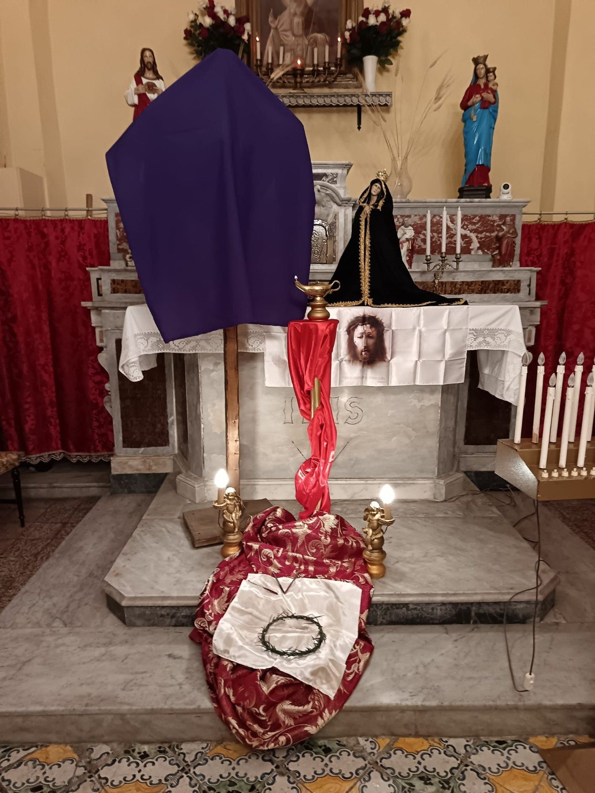

← Attività
Tempus Passionis · Via Crucis
Tempus Passionis.
Tempus Passionis.
La Via Crucis in Associazione.
Nel tempo quaresimale e pasquale l’Associazione vive la meditazione della Passione attraverso la Via Crucis, i segni penitenziali e i momenti di raccoglimento. Corona di spine, chiodi, Croce velata e Addolorata accompagnano un percorso di fede e memoria condivisa.
Via Crucismeditazione e partecipazione
Segnidella Passione di Cristo
Raccoglimentonella comunità

Memoria fotograficaImmagini che documentano
Immagini che documentano
un momento vissuto.
Le fotografie appartengono all’archivio dell’Associazione San Castrese e documentano attività e momenti vissuti dalla comunità.